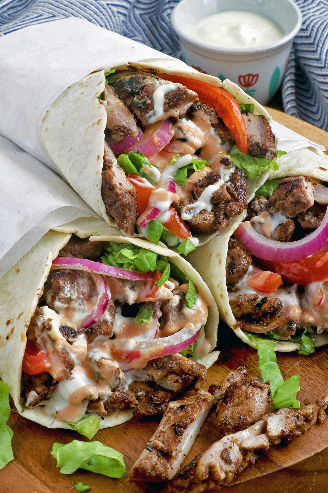

Shawarma

Description
The Shawarma is one of the Middle East's most famous street foods. Originating from the
Ottoman Empire, it consists of meat cut into thin slices, stacked in an inverted cone,
and roasted on a slowly turning vertical rotisserie or spit. It was traditionally made with lamb
or mutton, but variations have included the use of chicken, turkey, beef, or veal.
Thin slices are shaved off the cooked surface as it continuously rotates and are put into either
a pita bread, lavash, or plated with a rice dish. To this day, it still stands as my
most favorite food from the Middle East, and my most favorite in general.
Ingredients
- Lean lamb or beef, or boneless, skinless chicken, sliced very thinly -- 2 pounds
- Salt -- 2 teaspoons
- Pepper -- 1 teaspoon
- Ground allspice -- 1 teaspoon
- Ground cardamom -- 1 teaspoon
- Ground cloves -- 1/2 teaspoon
- Ground nutmeg -- 1/2 teaspoon
- Yogurt -- 1 cup
- Vinegar or lemon juice -- 1/4 cup
Steps
-
Mix all the ingredients together in a non-reactive bowl and set aside to marinate for anywhere from 1 hour to overnight. Drain and discard any excess marinade.
-
To Broil: Heat an oven broiler to high. Spread the meat evenly in a single layer on an ovenproof pan. Set 4 to 6 inches under the broiler flame and broil until cooked through, 5 to 8 minutes. Stir halfway through to cook evenly.
-
To Grill: Heat coals or set gas to high heat. Spread the meat in a grill basket and grill until cooked through, 5 to 8 minutes, turning occasionally.
-
Serve the shawarma hot inside folded pita bread with your choice of garnishes and sauces.